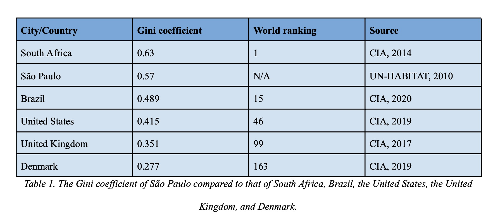
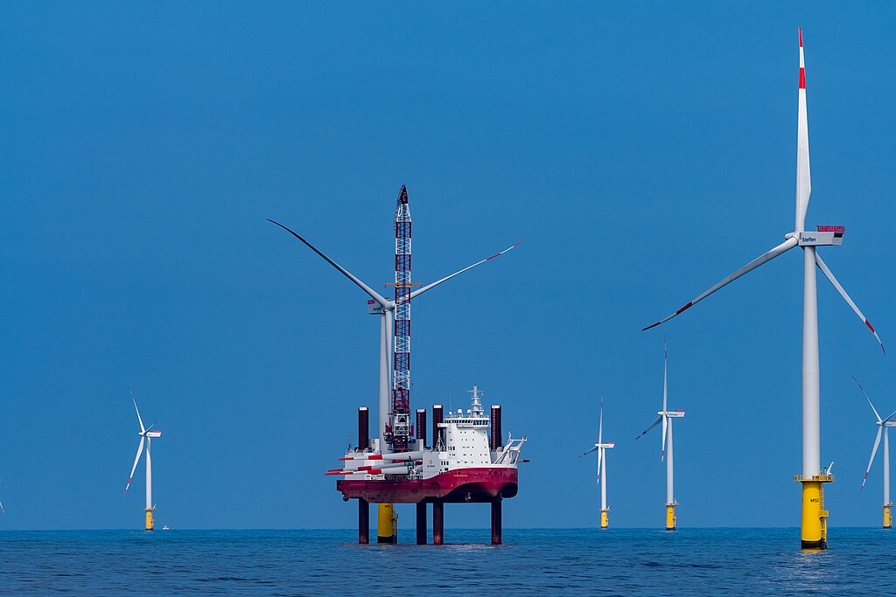
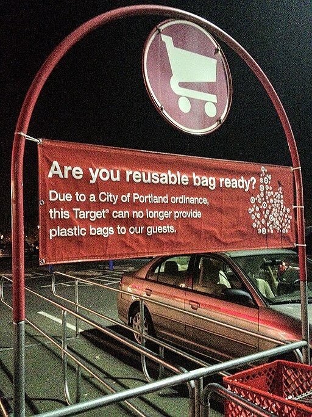

As an undergraduate capstone project, I worked with six other students and The Nature Conservancy to analyze the spatial distribution of scientific studies that used allometric equations for estimating carbon sequestration from agroforestry systems.

8-page essay on sustainable development goals in São Paulo, Brazil, looking at factors such the city’s Ecological Footprint and Gini Coefficient.
6-page memo explaining the likely impacts of new federal policy incentives regarding Light-Duty Elective Vehicles.
11-page essay examining the social history of lawns, in addition to their ecological consequences, to consider the ethical implications of mowing one’s lawn.
8-page essay based on Historian Linda Nash’s 2006 book Inescapable Ecologies, which traces evolving views of health and disease in California’s Central Valley during the 19th and 20th centuries.

3-page memo (and accompanying slide-deck) from my internship at the U.S. Department of Transportation
7-page memo on market-based climate change mitigation policies. After comparing different approaches from around the world, the memo recommends for the U.S. to adopt a federal cap-and-trade system for the electricity generation sector and a federal tax on GHG emissions from industrial buildings, transportation fuels, fuels used for heating and cooling, and imported goods.

20-minute group presentation on research design and econometric results from Rebecca L.C. Taylor’s 2019 paper in the Journal of Environmental Economics and Management.